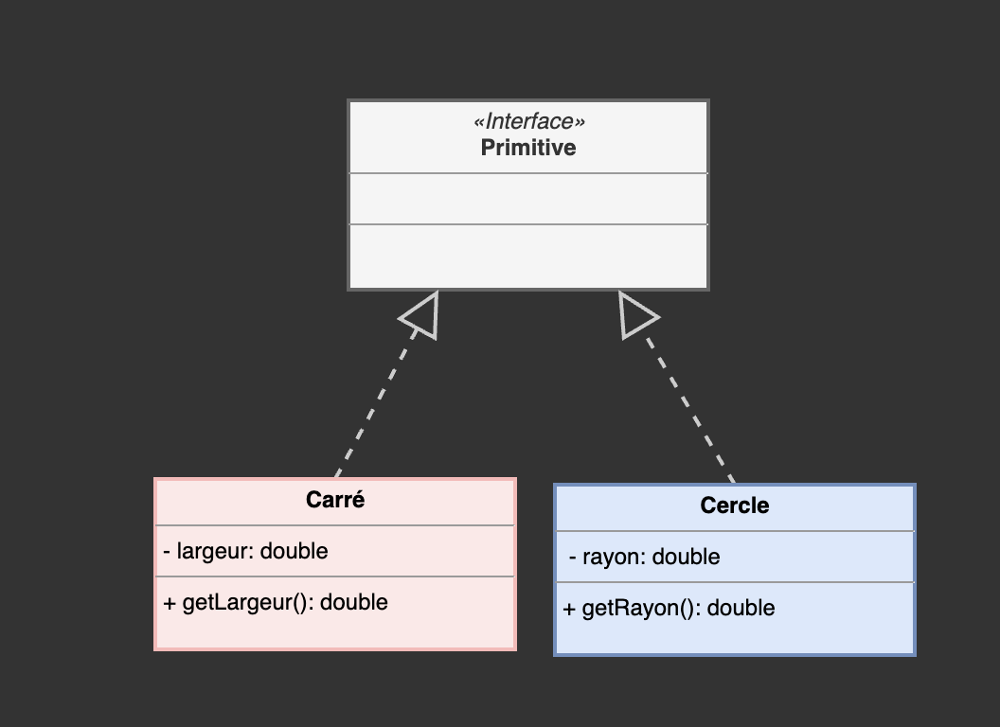
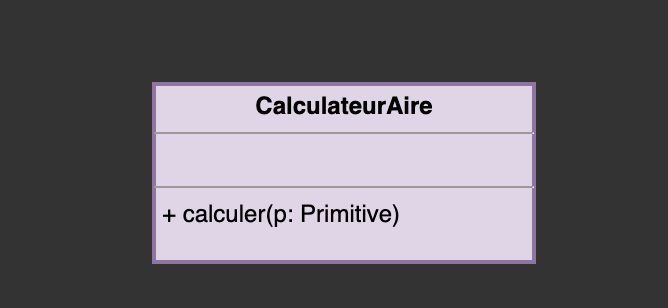
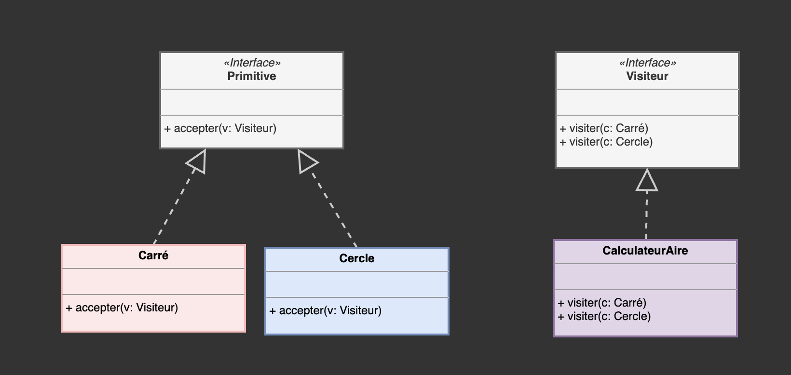

Design Patterns - Partie 2
Eric Demers, Michel Gagnon et Lévis Thériault
Patron Visiteur
Considérons une hiérarchie de classes dont vous souhaitez augmenter la fonctionnalité.
Pour ce faire, vous pouvez soit ajouter:
- de nouvelles classes
- de nouvelles méthodes virtuelles
Ajouter de nouvelles classes se fait simplement.
Vous dérivez d'une classe et implémentez les fonctions virtuelles nécessaires.
En revanche, l'ajout de nouvelles méthodes dans une hiérarchie est plus laborieux
Pour pouvoir manipuler des objets de manière polymorphique, vous devez ajouter une méthode virtuelle à la classe de base, et possiblement à plusieurs autres classes dans la hiérarchie.
Supposons:
Une hiérarchie à laquelle vous ajoutez rarement de nouvelles classes, mais à laquelle vous devez ajouter souvent des méthodes virtuelles.
Par exemple, considérons la hiérarchie de classes
Implémentation en C++
class Primitive {
public:
virtual ~Primitive() = default;};
class Carre: public Primitive {
double m_largeur;
public:
Carre(const double& largeur): m_largeur{largeur} {}
double getLargeur() const {return m_largeur;} };
class Cercle: public Primitive {
double m_rayon;
public:
Cercle(const double& rayon): m_rayon{rayon} {};
double getRayon() const {return m_rayon;}; };
Ajouter des méthodes dans une hiérarchie complexe
Implique d'ajouter du code dans toutes les classes dérivées
class Primitive {
public:
virtual double calculerAire() const = 0;
virtual double CalculerPerimetre() const = 0;
virtual ~Primitive() = default;}
}
SOLID
Une classe doit être à la fois ouverte (à l'extension) et fermée (à la modification)
Le patron Visiteur
- Permet d'ajouter facilement de nouvelles méthodes à une hiérarchie de classes
- Par contre, un changement de la hiérarchie de classes implique un changement des classes visiteurs
Une première implémentation simple mais pas nécessairement optimale basée sur le:
Run-Time Type Information
RTTI (Run-Time Type Information)
class CalculerAire {
public:
double calculer(Primitive *p) const {
if (auto carre = dynamic_cast<Carre *>(p)) {
return std::pow(carre->getLargeur(), 2);}
else if (auto cercle = dynamic_cast<Cercle *>(p)) {
return std::pow(cercle->getRayon(), 2) * M_PI;}
else return 0;
};
};
Patron Visiteur (GoF)
Implémentation de la classe abstraite Visiteur
class Visiteur {
public:
virtual double visiter(const Carre *) const = 0;
virtual double visiter(const Cercle *) const = 0;
virtual ~Visiteur() = default;
};
Implémentation de la classe concrète CalculerAire
class CalculerAire: public Visiteur {
public:
double visiter(const Carre *carre) const {
return std::pow(carre->getLargeur(), 2);
}
double visiter(const Cercle *cercle) const {
return std::pow(cercle->getRayon(), 2) * M_PI;
}
};
Ajoutez ensuite la méthode accepter à la hiérarchie de classes
class Primitive {
public:
virtual double accepter(const Visiteur *visiteur) const = 0;
virtual ~Primitive() = default;
};
class Carre: public Primitive {
double m_largeur;
public:
Carre(const double& largeur): m_largeur{largeur} {};
double getLargeur() const {return m_largeur;}
double accepter(const Visiteur *visiteur) const {
return visiteur->visiter(this);}
};
Utilisez ensuite de cette manière
Cercle cercle(10);
CalculerAire calculerAire;
double aireDuCercle = cercle.accepter(&calculerAire);
std::cout << aireDuCercle << std::endl;
C++17
std::visit
#include <iostream>
#include <math.h>
#include <variant>
class Carre {
double m_largeur;
public:
Carre(const double& largeur): m_largeur{largeur} {}
double getLargeur() const {return m_largeur;}
};
class Cercle {
double m_rayon;
public:
Cercle(const double& rayon): m_rayon{rayon} {};
double getRayon() const {return m_rayon;};
};
class CalculerAire {
public:
double operator()(const Carre &carre) const {
return std::pow(carre.getLargeur(), 2);
}
double operator()(const Cercle &cercle) const {
return std::pow(cercle.getRayon(), 2) * M_PI;
}
};
using Forme = std::variant<Cercle, Carre>;
int main() {
Cercle cercle(10);
Forme forme = cercle;
CalculerAire calculerAire;
double aireDuCercle = std::visit(calculerAire, forme);
std::cout << aireDuCercle << std::endl;
return EXIT_SUCCESS;
}